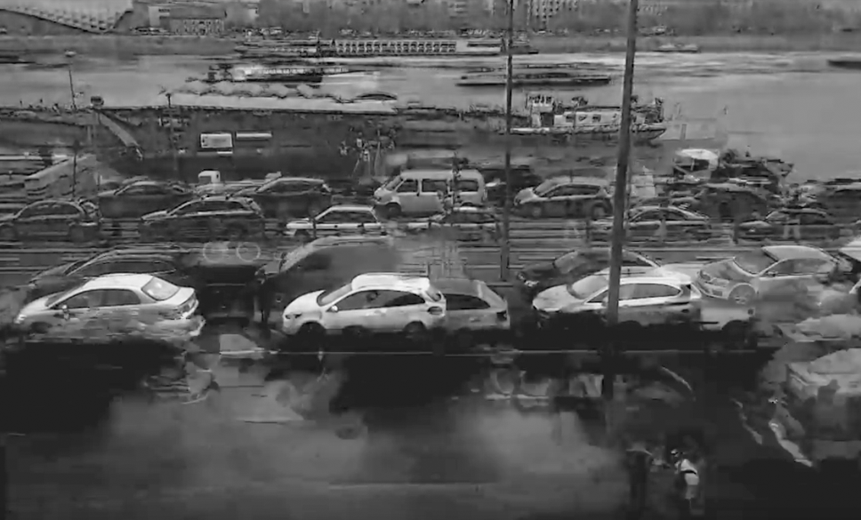
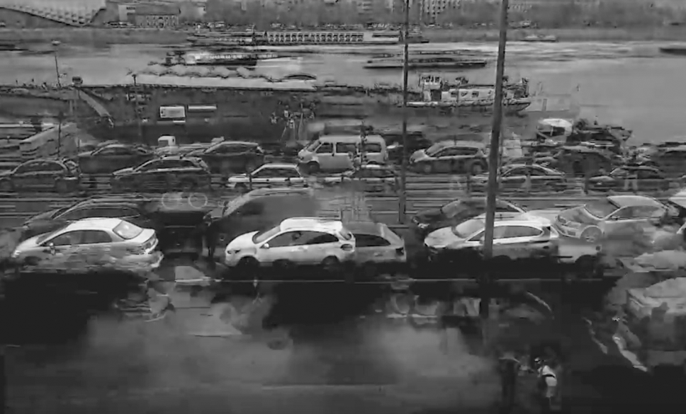
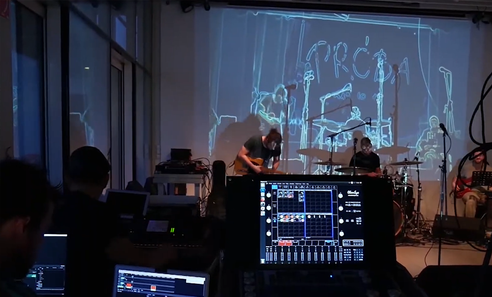
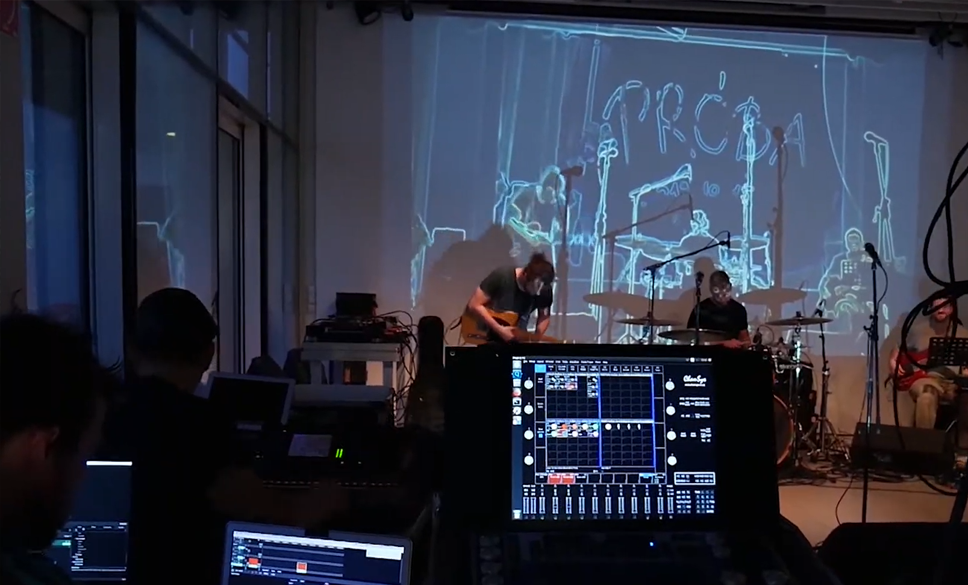
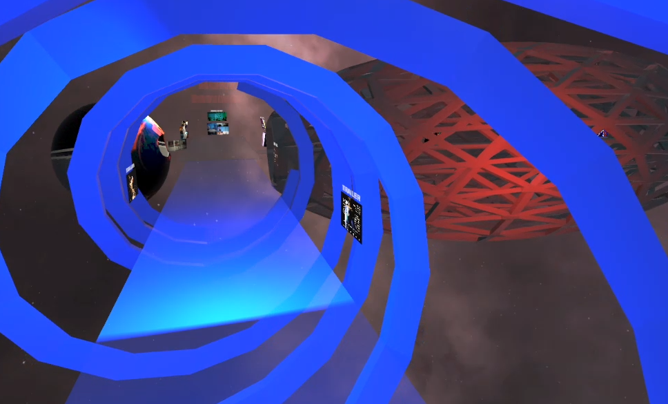
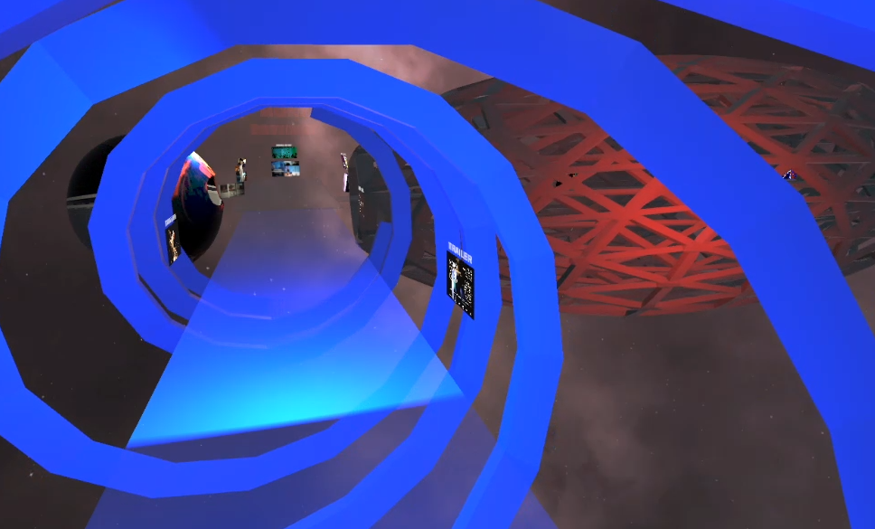
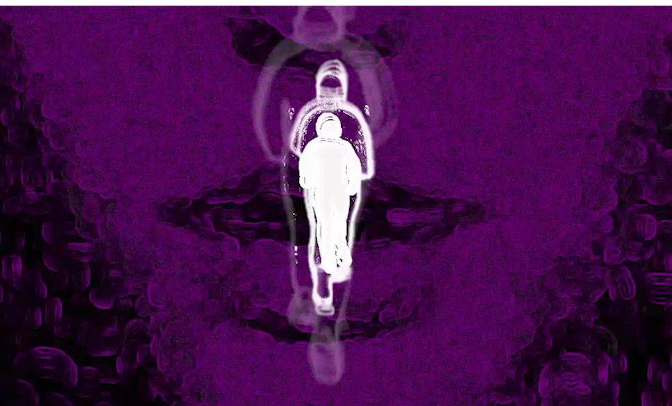
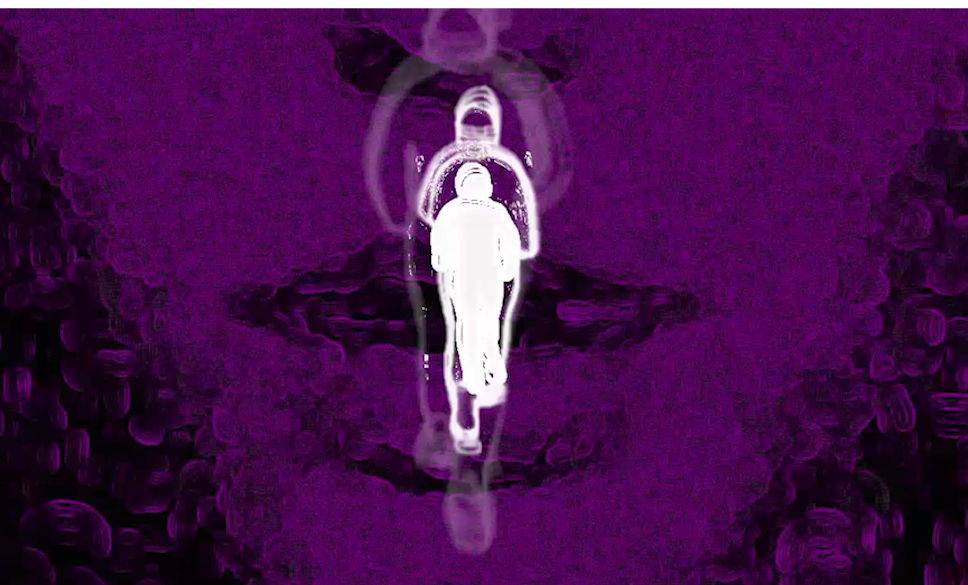

©Bartha Máté // StereoAkt
BREDÁN Máté
Bredán Máté vagyok, fénytervező, médiaDesigner és technikus.2021 nyarán diplomázom a MOME Média Design BA képzésén.
2013 óta dolgozom együtt színházi társulatokkal és zenekarokkal, mint audiovizuális tervező és technikus.
Az előadások vizualitásának kidolgozása során rengeteg lehetőségem adódott a fény és tér viszonyával játszani. Ezt a tapasztalatot is felhasználva szeretek kísérletezni a kreatív-kódolás és az immerzív audiovizuális művek területén.
Máté BREDÁN
Máté Bredán is a lighting- and visual designer working primarily with independent theater companies and musicians.He graduates of Media Design BA from Moholy-Nagy University of Art and Design Budapest in the summer of 2021.
Developing the visuality of performances provided him plenty of opportunities to experiment with space and lights.
Combining this experience with creative coding he seeks new paths to create immersive multimedia pieces for performances and installations.
YouTube
CV (2019)
Portfolio (2020)
Szakmai előélet(2018)
©Bands Through Lens // Tilos Rádió
MOME Media Design BA (2018-2021)
A képzés három évében koncepciófejlesztői módszerek és tartalomgyártói technikák (szoftverek, eszközök) használatát sajátíthattam el. Elsősorban interaktív audiovizuális élmények megteremtésével kísérleteztem és tudatosan fejlesztettem felvételtechnikai képességeimet, hogy önállóan tudjak videótartalmakat előállítani.Moholy-Nagy University of Art and Design
During the three years at the MediaDesign BA I studied conception development techniques and content creation tools.Through our assignments I experienced with audiovisual programming (e.g. interactive installations, glitchart) and improved my video creation skills through music videos, interview movies and art documentation.
 

RIVERGULL // KÓD-ETŰD
JAVA-programozott videólooperRIVERGULL // VISUAL CODING
Videoperformance with Processing 

PIM-A38 // SZÍNPADKÉP
Élőfestés és feedback vizuálPIM-A38 // STAGEDESIGN
Live-painting and feedback visual 

PORTFOLIÓ-TÉR // EGOTRIP
Virtuális kiállítás (Blender + Unity)portfolioSpace // VIRTUALITY
Experiment with Blender + Unity 

LOSE YOUR MIND // VIZUÁL
Generatív videóklip FALMI zenéjéreLOSE YOUR MIND // VISUAL
Generative music videO for FALMIKORÁBBI TANULMÁNYOK
EARLIER STUDIES
2013-2015 Színháztechnikus,
szcenikus OKJ
SZFE
- Fénytechnikus, hangosító és színpadmester képesítéseket is megszereztem.
2013-2015 TheaterTechnician,
Scencenician OKJ
University of Theatre and Film Arts, Budapest
- Qualification for lighting and audio engineer, stage-technician, theater-scenics.
2012-2013 Fizika BSc
BME
- Ekkor tanultam a programozás alapjait. Azóta autodidakta módon sajátítottam el a Processing JAVA-alapú nyelvét, a Unity használata során a C++, a TocuhDesigner-ben pedig a Python nyelvek használatát.
- Kétséget kizáróan ért a felismerés, hogy nem kívánok "hivatásos tudós lenni".
2012-2013 Physics BSc
Budapest University of
Technology
2012 B-típusú jogosítvány
- 2000+ km tapasztalattal rendelkezem kisbuszvezetésben.2011 Felsőfokú Angol nyelvvizsga
- ECL vizsgarendszer, C1.2012 Driving license (B-type)
- 2000+ km experience with vans.2011 English advanced level
- ECL exam, C1.SZÍNHÁZ
2013- Szabadúszó tervező és technikus
35+ bemutató, 15+ rendezővel, 10+ helyszínen2014-2017 HÁTSÓ KAPU technikai felelős
200+ előadás, mozi, koncert, kiállítás, gyerekprogram2017-2018 JURÁNYI HÁZ színháztechnikus
Független befogadó színházPÉLDA:
2020 ÖRKÉNY SZÍNHÁZ - Kiváló dolgozók
Média Design: videó- és grafika használatának tervezése, stream rendezése és vágásaZENE
2013- FESZTIVÁL hangmérnök
Ezek jellemzően két-három technikus által önállóan üzemeltetett zenei színpadok2015-2017 AURÓRA hangosító munkacsoport-vezető
Fotóválogatásom a Facebook-on 2016-bólPÉLDA:
FREAKIN DISCO zenekar
MONSTRE koncert @TRAFÓ - fénytechnikaTRAILEREK
Matkó Tamás: QUAD
TrailerKálmán Eszter: DOMESTIC NOISE
TrailerStereoAkt: EMLÉKEK KLINIKÁJA
TrailerTHEATER
2013- Freelancer designer and technican
35+ premiere, w/ 15+ director, @ 10+ venues2014-2017 HÁTSÓ KAPU all-field technician
200+ performances, movie-clubs, concerts, exhibitons, kids' programme2017-2018 JURÁNYI HÁZ local theater technician
Independent theater groups' shared venueFOR EXAMPLE:
2020 ÖRKÉNY THEATER - Kiváló dolgozók
Média Design: video and graphics design, stream director and editorMUSIC
2013- FESTIVAL soundengineer
These stages are usually operated independently by 2-3 technicians at a time2015-2017 AURÓRA soundengineer collective-leader
Photocollection from the fall-winter of 2016FOR EXAMPLE:
FREKAIN DISCO band
MONSTRE concert @TRAFÓ - lightsTRAILERS
Matkó Tamás: QUAD
TrailerKálmán Eszter: DOMESTIC NOISE
TrailerStereoAkt: EMLÉKEK KLINIKÁJA
TrailerKIÁLLÍTÁSOK
EXHIBITIONS
2020 Dynamical Systems @ Budapest Art Week
Maruscsák Dáviddal és Mátyás Boldizsárral közös kiállításunk (néző-alkotás interkació programozás Kinect-ekkel TouchDesigner-ben)2020 Dynamical Systems @ Budapest Art Week
Our interactive AV-installation w/ Dávid Maruscsák and Boldizsár Mátyás (programming viewer-piece interaction w/ Kinects in TouchDesigner)2019 TERRA INCOGNITA @ FUBAR - GlitchArt kiállítás (Zágráb, HR)
A TERRA INCOGNITA című videómat beválogatták a Fubar, nemzetközi glitch-art fesztivál kiállítására 2019-ben.2020 TERRA INCOGNITA @ FUBAR - GlitchArt Exhibition (Zagreb, HR)
My video-piece titled TERRA INCOGNITA was selected for Fubar, international glitch-art festival's exhibition in 2019.2019 feedback_onthemove @ Kolorádió Fesztivál X MOME
A szabadban, a feszitvál egy forgalmas ösvénye mentén kifeszített tüllfüggönyökre gerjesztett kameraképpel a fesztivál látogatói táncolhattak. (Stáb névsora a videóban.)2019 feedback_onthemove @ Kolorádió Fesztivál X MOME
Feedback audiovisual installation along a frequented pathway at an outdoor music festival close to Budapest. (Crew listed in the video.)